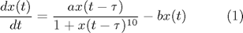
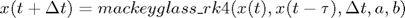
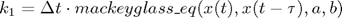
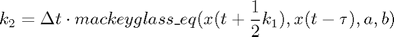
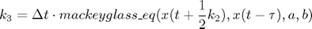
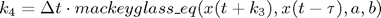
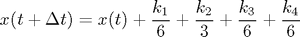
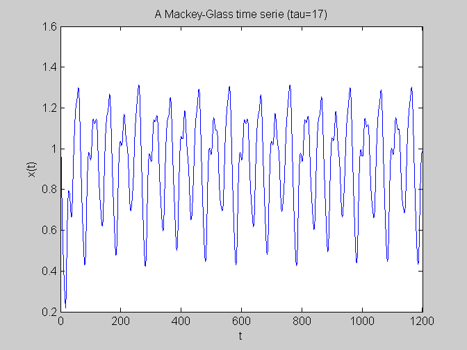

mackeyglass
This script generates a Mackey-Glass time series using the 4th order Runge-Kutta method. The code is a straighforward translation in Matlab of C source code provided by Roger Jang, which is available here
Contents
The theory
Mackey-Glass time series refers to the following, delayed differential equation:

It can be numerically solved using, for example, the 4th order Runge-Kutta method, at discrete, equally spaced time steps:

where the function mackeyglass_rk4 numerically solves the Mackey-Glass delayed differential equation using the 4-th order Runge Kutta. This is the RK4 method:





where mackeyglass_eq is the function which return the value of the Mackey-Glass delayed differential equation in (1) once its inputs and its parameters (a,b) are provided.
Here is an example:
Input parameters
a = 0.2; % value for a in eq (1) b = 0.1; % value for b in eq (1) tau = 17; % delay constant in eq (1) x0 = 1.2; % initial condition: x(t=0)=x0 deltat = 0.1; % time step size (which coincides with the integration step) sample_n = 12000; % total no. of samples, excluding the given initial condition interval = 1; % output is printed at every 'interval' time steps
Main algorithm
- x_t : x at instant t , i.e. x(t) (current value of x)
- x_t_minus_tau : x at instant (t-tau) , i.e. x(t-tau)
- x_t_plus_deltat : x at instant (t+deltat), i.e. x(t+deltat) (next value of x)
- X : the (sample_n+1)-dimensional vector containing x0 plus all other computed values of x
- T : the (sample_n+1)-dimensional vector containing time samples
- x_history : a circular vector storing all computed samples within x(t-tau) and x(t)
time = 0; index = 1; history_length = floor(tau/deltat); x_history = zeros(history_length, 1); % here we assume x(t)=0 for -tau <= t < 0 x_t = x0; X = zeros(sample_n+1, 1); % vector of all generated x samples T = zeros(sample_n+1, 1); % vector of time samples for i = 1:sample_n+1, X(i) = x_t; if (mod(i-1, interval) == 0), disp(sprintf('%4d %f', (i-1)/interval, x_t)); end if tau == 0, x_t_minus_tau = 0.0; else x_t_minus_tau = x_history(index); end x_t_plus_deltat = mackeyglass_rk4(x_t, x_t_minus_tau, deltat, a, b); if (tau ~= 0), x_history(index) = x_t_plus_deltat; index = mod(index, history_length)+1; end time = time + deltat; T(i) = time; x_t = x_t_plus_deltat; end figure plot(T, X); set(gca,'xlim',[0, T(end)]); xlabel('t'); ylabel('x(t)'); title(sprintf('A Mackey-Glass time serie (tau=%d)', tau));
0 1.200000 1 1.188060 2 1.176238 3 1.164535 4 1.152947 5 1.141475 6 1.130117 7 1.118873 8 1.107740 9 1.096717 10 1.085805 11 1.075001 12 1.064305 13 1.053715 14 1.043230 15 1.032850 16 1.022573 17 1.012398 18 1.002324 19 0.992351 20 0.982477 ...